LINE Smart Queue Assistant
LINEで始める、見える・離れられる受付体験
- LINEアプリ上で直接動くスマート順番待ち・予約・決済基盤
- 受付番号発行、待ち人数＆目安時間（ETA）のリアルタイム表示
- LINE Messaging API による自動プッシュ通知配信
- 複数店舗、共通商品カタログ、権限ベースの運用ダッシュボード

本プロダクトは、店舗、サロン、クリニック等の対面サービスにおいて、受付、予約、注文、決済、顧客通知をLINE上で一貫して提供するスマート順番待ちプラットフォームです。
本発表では、製品コンセプト、解決する課題、技術構成、詳細な運用フローおよび今後の展開についてご説明いたします。
対面サービスにおける順番待ちの日常的な課題
従来の受付体験における課題点と不透明さ
📌 受付付近から離れられない
発券後に待合エリアで待機を余儀なくされ、自由に行動できません。
⏳ 待ち時間・順番が不透明
目安時間（ETA）や前方の待ち人数が分からず不安が生じます。
📢 手動・口頭での呼出し
スタッフの呼び出し負担と聞き逃しリスクが生じます。
🏢 待合スペースの過密化
混雑した待合エリアは店舗イメージ低下に繋がります。
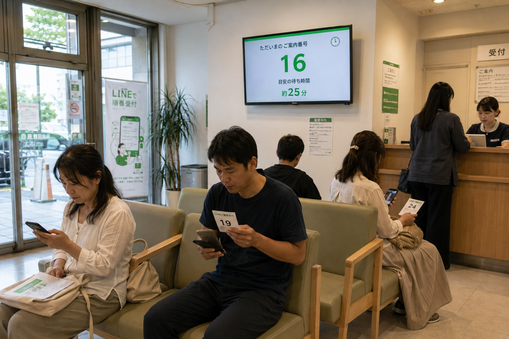
問題は待ち時間そのものだけでなく、「あとどれくらいで呼ばれるか分からない」という不透明さにあります。
これによりお客様は受付を離れられず、スタッフも手動での呼び出しや問い合わせ対応に追われることになります。
順番待ちは「番号の発行」だけではない
運用現場における個別システムの分断と課題
📊 待ち時間が不透明
リアルタイムな予想待ち時間が提示されません。
🧩 業務システムが分断
受付、注文、在庫、決済が独立し二重入力が発生。
🔔 順番を逃すリスク
個人端末へ呼出し通知を送信する手段がない。
📉 運用データが集計不能
対応時間や離脱率を一元管理できていません。
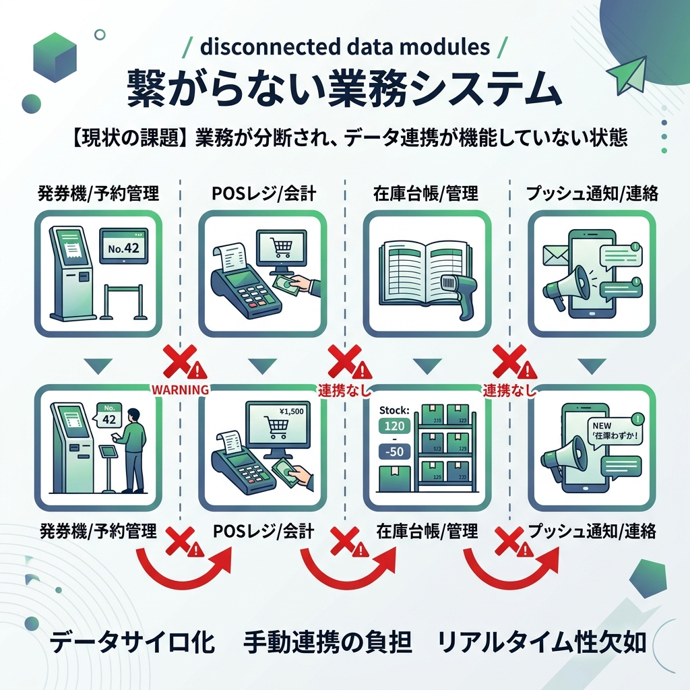
しかし実際の店舗運用では、お客様の選択したメニュー、事前決済の有無、在庫状況、担当スタッフ、通知タイミングなど、多くの業務が絡み合っています。
これらが個別システムに分断されていると、店舗の円滑な運用やデータ分析が困難になります。
お客様は「並びたい」のではない — 「いつ戻るか」を知りたい
スマートなモバイル体験による時間の主導権回復
- 手元のスマートフォンで即座に受付番号・チケットを取得
- 前方に何人待っているかをリアルタイムで可視化
- 過去データに基づく目安待ち時間（ETA）を算出し提示
- 順番が近づいたタイミングでLINE自動通知を正確に配信
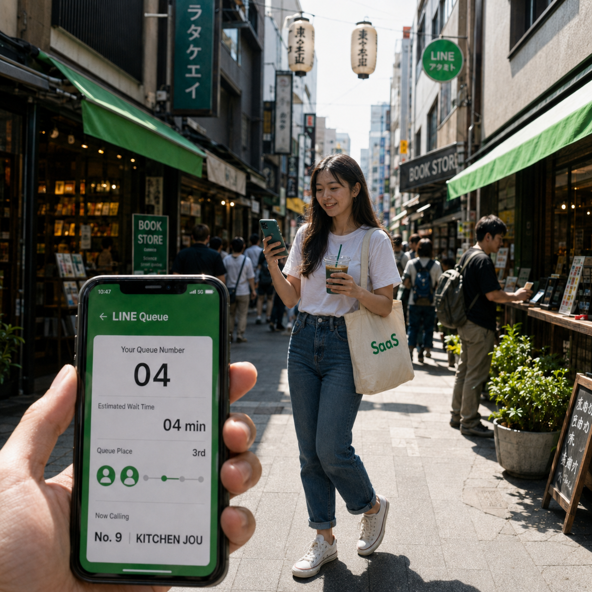
本当に必要なのは「自分が今どの順番にいて、いつ戻ればよいか」を把握することです。
LINEという日常的なアプリを活用することで、使い慣れたスマホ画面上でこの安心感を提供できます。
LINE-first Smart Queue Platform
LINE受付から店舗運用ダッシュボードまでを一本化
- 店舗の固定QRコードをLINEアプリで読み取りスタート
- LINE Login でアカウント登録なしの超高速ログイン
- 目的の受付キューおよびサービス・商品をスムーズに選択
- ETA・前方待ち人数がわかるデジタルチケットを取得
- LINE Messaging API による自動プッシュ通知を受信
- 店舗スタッフは専用の役割別ダッシュボードで対応
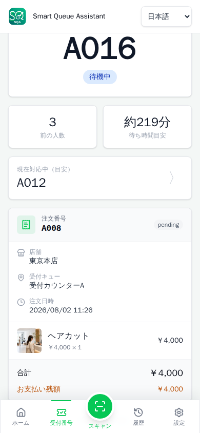
お客様は店舗のQRを読み取り、LINE認証を経て、キューや商品・サービスを選択しデジタルチケットを受け取ります。
ステータスが更新されるとLINE Messaging APIから自動通知が届き、店舗側は役割ごとの専用ダッシュボードで効率的に運用できます。
LINE Smart Queue Assistant
導入申込みから店舗運用・顧客体験までを一貫サポート
🏢 Business Onboarding
法人がWebから申請、プラン選択、デモ決済を行い、管理者の審査を受ける申込みフロー。
🌐 Multi-branch
複数拠点を独立管理。支店ごとに独自の固定QRコード、営業時間、スタッフを割り当て。
📦 Product Catalog
組織共通のサービス・商品カタログを1箇所で管理。実在庫（Stock）は支店別で管理。
🎫 Booking & Ticket
LINEから即時発券。混雑状況と平均サービス時間に基づき動的なETAをリアルタイム算出。
👨🍳 Staff Operation
スタッフ専用画面：呼出し・対応開始・完了、現地での残金会計、領収書発行を一画面処理。
💬 LINE Notification
発券完了・5人待ち・呼出し・対応完了・キャンセル等のステータス変化をLINEで自動送信。
法人の利用申込み、管理者による審査、オーナーによる組織設定、支店長によるキュー・在庫設定、 possessed、 Customerの予約とスタッフの対応完了まで、全運用サイクルをサポートする包括的なシステムです。
アーキテクチャ & コア技術
信頼性の高いモダンSaaS技術スタックとLINE密連携
⚛️ Frontend Web UI
React + Vite: 爆速のページロードとスムーズな画面遷移。スマホからPCまで完全レスポンシブ対応。
🛡️ Backend API
Express + TypeScript: 堅牢なRESTful API設計、厳格なデータ型チェックとマルチテナント権限管理。
🗄️ Database
PostgreSQL: ACID一貫性を保持し、複数店舗・大量トランザクションを安全かつ確実に一元管理。
🟢 LINE Ecosystem
LIFF + LINE Login + Messaging API: LINE内アプリ直接起動、ワンタップ認証、自動通知の高度な統合。
フロントエンドはReactとViteを組み合わせ、圧倒的な読み込み速度とスムーズなUI操作を実現。バックエンドはExpressとTypeScriptで構築され、データ型と権限の安全性を確保しています。
データベースにはPostgreSQLを採用し、複数組織・支店・大量のチケットデータを確実に管理します。
最大の特長はLINEエコシステムとの深い連携であり、LIFFとLINE Loginによるアプリ内シームレス認証と、Messaging APIによる自動通知を実現しています。
1つのシステム — 役割に応じたマルチワークスペース
管理者からエンドユーザーまで厳格な権限管理
| ロール | 主な責任と操作範囲 |
|---|---|
| Platform Admin | 法人利用申請の確認・審査・承認および組織データ生成 |
| Organization Owner | 組織設定、共通商品・サービスカタログ管理、支店・Manager招待 |
| Branch Manager | 担当支店の営業時間、キュー、商品割り当て、在庫、スタッフ管理 |
| Staff | 当日の呼出し、対応開始・完了、キャンセル、No-show、領収書発行 |
| Customer | QR読み取り、LINEでの受付予約、チケット・履歴確認、通知受信 |
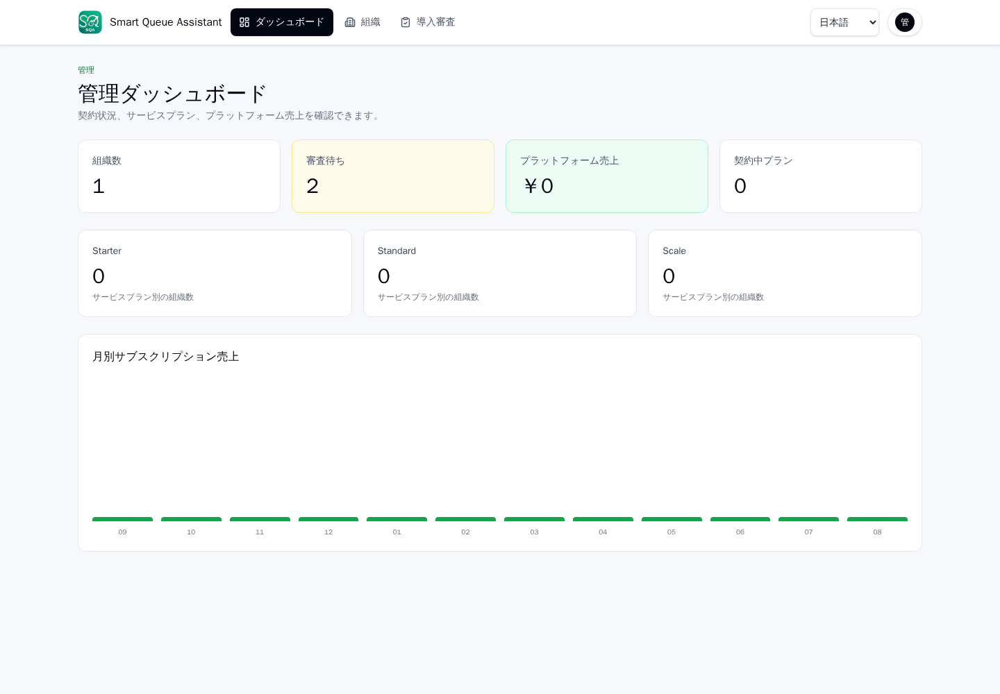
Platform Adminはプラットフォーム全体を管理。Organization Ownerは組織設定や商品カタログを管理します。
Branch Managerは割り当てられた支店のキューや在庫、スタッフを管理し、Staffは日々の受付業務を担当します。CustomerはLINEを通じて快適に利用します。
End-to-End Business Flow
法人申込みから店舗運用・LINE通知までの9ステップ
重要なポイントとして、管理者の承認時点では組織と招待状態のオーナーのみが作成され、支店やキューは自動作成されません。
その後、オーナーおよび支店長が実際の店舗運用に合わせて段階的に設定を進めます。
法人がWebから直接利用申請
初期パスワード入力なしの透明性の高い申請フォーム
- 法人名、屋号、登録番号、連絡先、住所を入力
- 想定拠点数と月間顧客数から最適なプラン（Starter/Standard/Scale）を選択
- デモ環境では Demo Payment を完了し審査待ちとして送信
- 申請時点ではパスワード未設定でセキュリティを担保
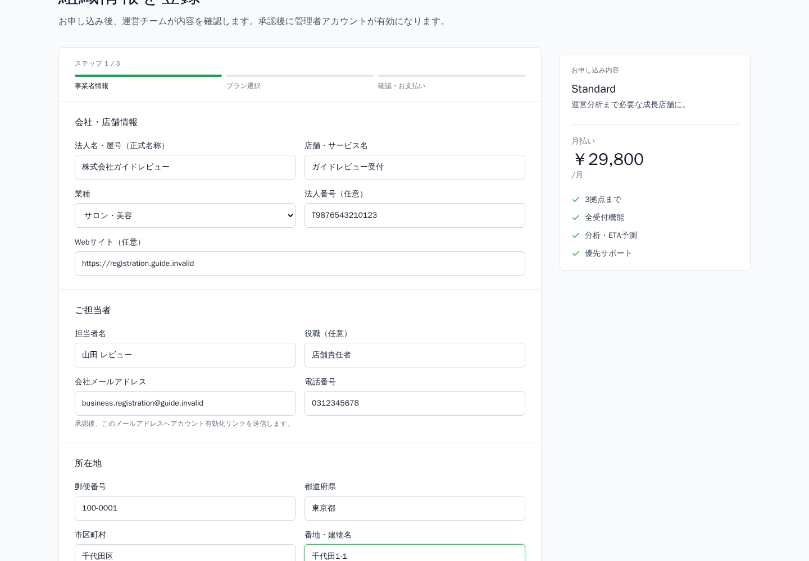
この段階ではパスワードを設定せず、法人情報、連絡先、想定規模、希望プランのみを入力します。
送信後、申請は管理者による審査ステータスとなります。
Platform Admin による申請審査
管理画面からの厳格な検証と承認フロー
- 審査待ち申請一覧から法人情報およびデモ決済結果を確認
- ワンクリックで Approve（承認）または Reject（却下）を実行
- 承認時に Organization および招待状態の Owner アカウントを生成
- 無許可の自動登録を防ぎ、プラットフォームの健全性を維持
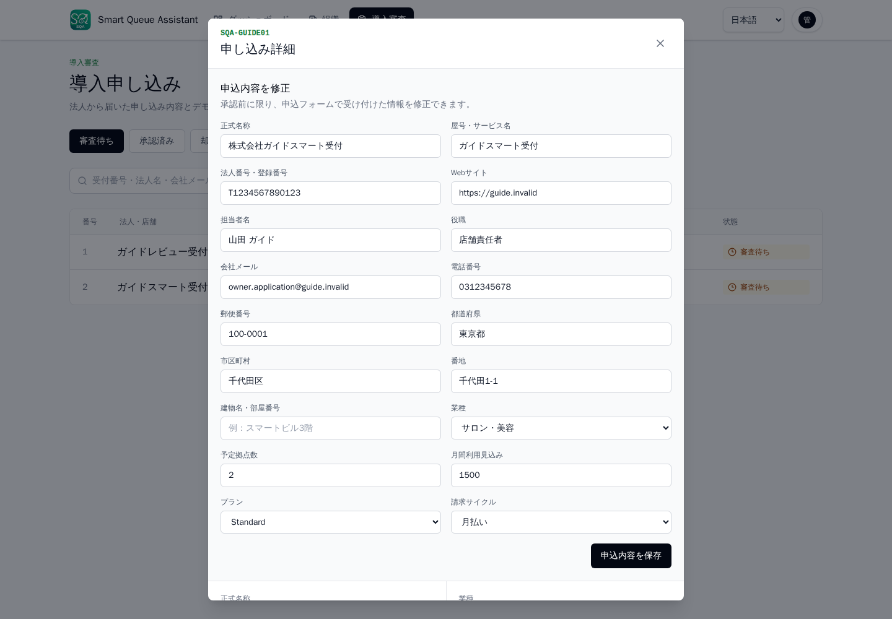
承認を実行すると、組織データと招待状態のオーナーアカウントが自動生成されます。
未検証の利用を防ぎ、安全なプラットフォーム運用を担保する重要なステップです。
オーナーによるアカウント有効化
メールリンク経由で自らパスワードを安全設定
- 承認完了後にオーナー宛てへ有効化メールを自動送信
- 一回限りの安全なリンクからオーナー自身でパスワードを登録
- Organization のステータスを正式に Active へ切り替え
- 管理者が仮パスワードを発行しない安心のセキュリティ構造
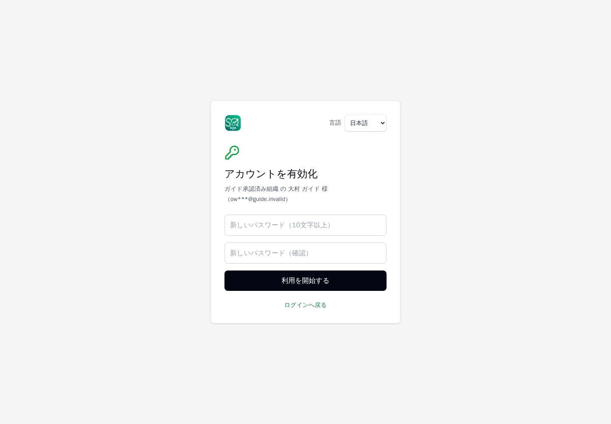
管理者が初期パスワードを発行・共有しない設計により、セキュリティリスクを大幅に低減しています。
カタログは Organization 単位で管理
商品定義の一元化と支店在庫の明確な分離
- 全支店で共有される商品・サービスマスタを統一登録
- 自動採番コード（商品/サービス識別コード）による正確な管理
- 標準価格、所要時間、事前決済（Require Prepayment）の設定
- カタログ定義と各支店の物理在庫（Stock）を完全に分離
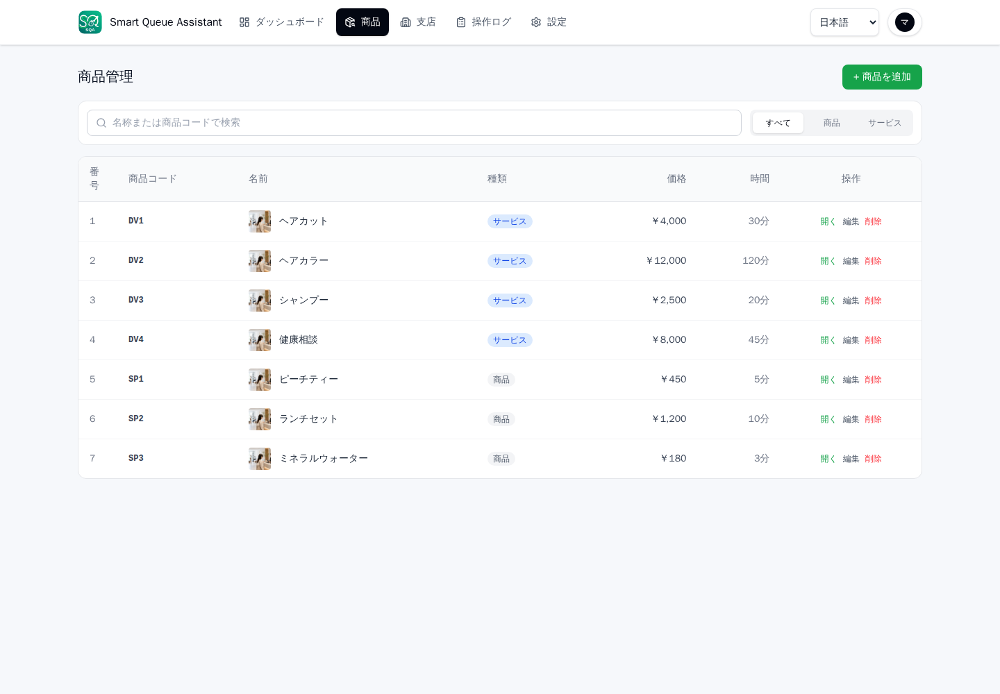
これにより、全支店で価格やサービス時間の定義を一貫して保つことができます。
一方で、各商品の実在庫（Stock）は各支店で個別に管理されます。
1つの組織で複数支店を管理
多店舗展開に対応する柔軟なマルチブランチ構造
- オーナーが実店舗に対応する支店（Branch）を自在に登録
- 各支店の責任者として Branch Manager を個別に招待
- 支店ごとに独立した固定QRコードおよびアクセス権限を発行
- 営業時間・定休日（Business Calendar）を拠点で個別に設定
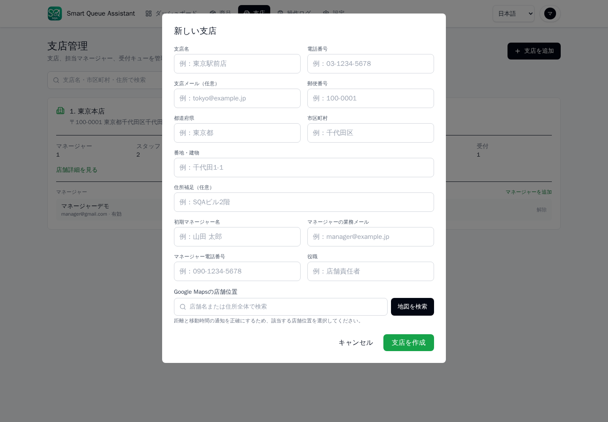
各支店は独自の住所、営業時間、支店長、固定QRコードを持ち、多店舗展開を行う事業者に適した構造となっています。
支店ごとの独立した運用空間
担当店舗の現場データ・設定に限定された安全な管理画面
- Queue Management: 受付並び列の作成・編集・状態切り替え
- Business Calendar: 臨時休業日や特別営業時間の登録
- Stock Management: 自店舗の実在庫数の更新と補充設定
- Staff Management: 現場スタッフの招待とシフト権限管理
- Branch QR: 店舗設置用の専用固定QRコードの出力
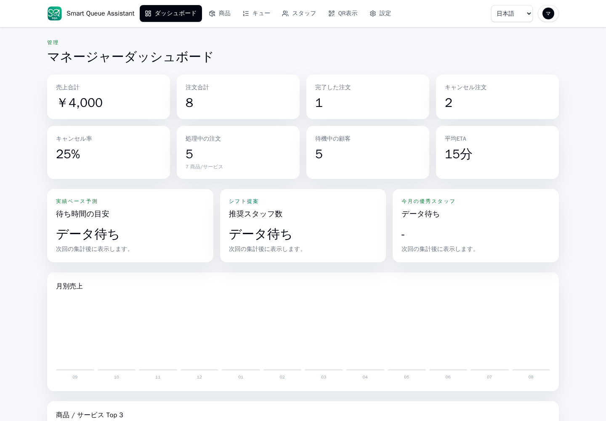
キュー、営業時間、在庫、スタッフ、QRコードを店舗の状況に合わせて柔軟に調整できます。
権限を支店内に限定することで、他店舗のデータ誤操作を防ぎます。
1つの固定QR — 複数のキュー
QR貼り替え不要で柔軟なサービス分流を実現
- 1つの店舗に「一般受付」「優先受付」「サービス専用」等を複数設置
- キューごとに提供する商品・サービス（Queue Catalog）を指定
- 店頭に掲示するQRコードは常に1つ固定で印刷・掲示の負担軽減
- キューの追加・削除を行っても店頭のQRコードを変更する必要なし
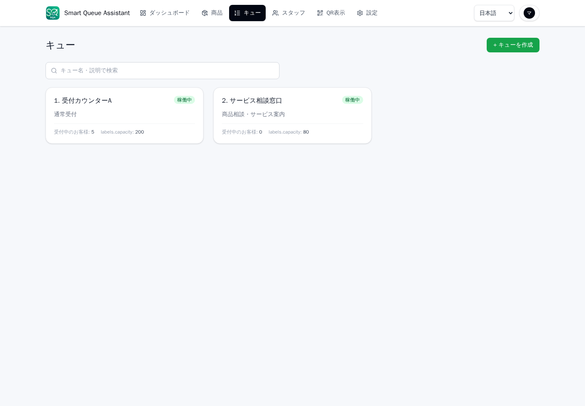
たとえば「カット用」「カラー用」「優先受付」などを分けることが可能です。
店舗に掲示するQRコードは1つで済み、お客様が読み取り後に希望のキューを選択します。
キューの柔軟な動作設定
現場の運用ルールを細部まで再現できる豊富なパラメータ
- ステータス制御: Open（受付中）/ Closed / Paused / Archived
- 1日の上限受け入れ数（Capacity）制限で混雑を制御
- チケット番号の識別前置詞（Ticket Prefix: A-, B-, P-等）設定
- 動的ETA計算用の平均サービス時間（Average Service Time）定義
- 不在時ルール（Absence Policy）および対応商品の個別割り当て
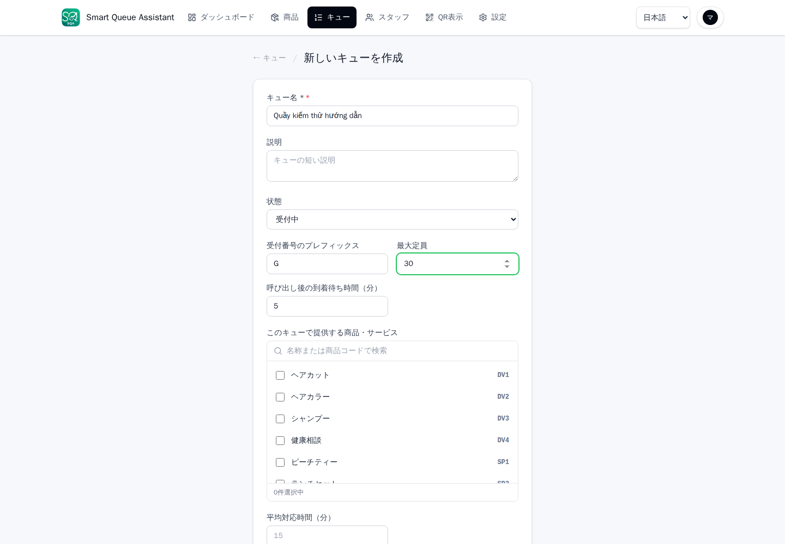
受付状態、1日の受け入れ上限、チケット番号の接頭辞、平均対応時間、不在時の保留ルールなどを細かくチューニングできます。
支店ごとの在庫コントロール
Reserve ➔ Release ➔ Consume の自動在庫ライフサイクル
- 有限在庫（Finite）と無制限在庫（Unlimited）の双方に対応
- Reserve（確保）: 客のBooking完了時に即座に仮確保
- Release（解放）: キャンセル・No-show時に自動で在庫復元
- Consume（消費）: スタッフの接客完了時に実在庫を確定減算
- 過剰予約（Overselling）を根本から防止する安全設計
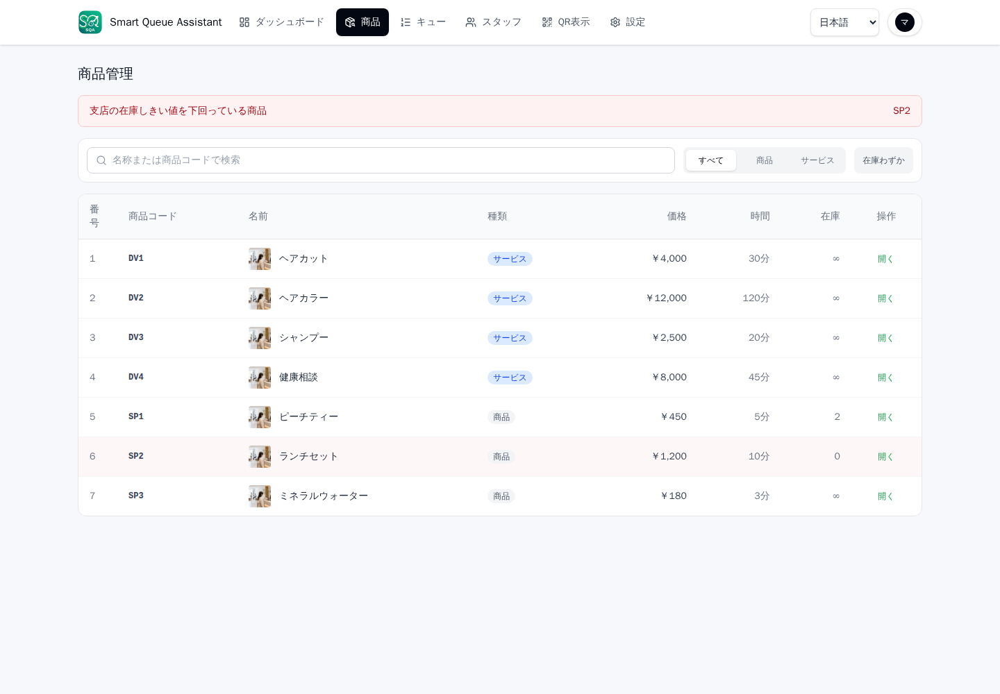
予約時にReserve、キャンセル時にRelease、対応完了時にConsumeというライフサイクルで、過剰予約を防止します。
LINEからのシームレスな受付体験
離脱率ゼロを目指すシンプルなユーザーフロー
- 店頭の固定QRコードを使い慣れたLINEカメラでスキャン
- LINE Login による即時認証（会員登録・メール入力不要）
- 希望の受付キューおよびカタログメニューを選択
- 必要な連絡先を入力し、ワンタップでBooking（予約）完了
- 発行されたデジタルチケットをスマホ上でリアルタイム確認
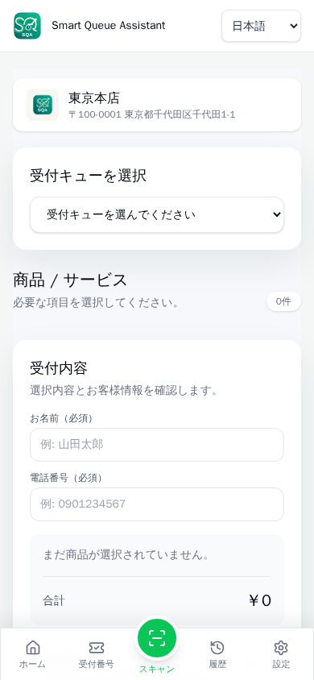
メールアドレスやパスワードの新規登録は不要です。
LINE認証後、キューとメニューを選び、簡単な情報入力で即座に予約が完了します。
チケットは顧客体験の中心
必要な情報がすべて揃うデジタルステータス画面
- Ticket Code & Order Number: 明確な受付番号と注文コード
- People Ahead: リアルタイムでカウントダウンされる前方待ち人数
- ETA (Estimated Time): 過去データに基づき算出される呼出し目安時間
- Selected Items & Payment: 選択メニュー明細と支払済み/未払状況
番号だけでなく、前方に何人待っているか、あと何分で呼ばれるか（ETA）、注文内容、決済状況を一画面でリアルタイムに確認できます。
LINE連携がもたらす製品価値
LINEエコシステムテクノロジーの高度な統合
- LIFF: LINEアプリ内でブラウザ切り替えなくWeb Appを直接起動
- LINE Login: ワンタップで確実な顧客認証を行い離脱を最小化
- Messaging API: 発券・呼出し・直前通知・完了を自動プッシュ配信
- Branch QR: リアルな店舗空間とデジタル体験をつなぐ唯一の起点
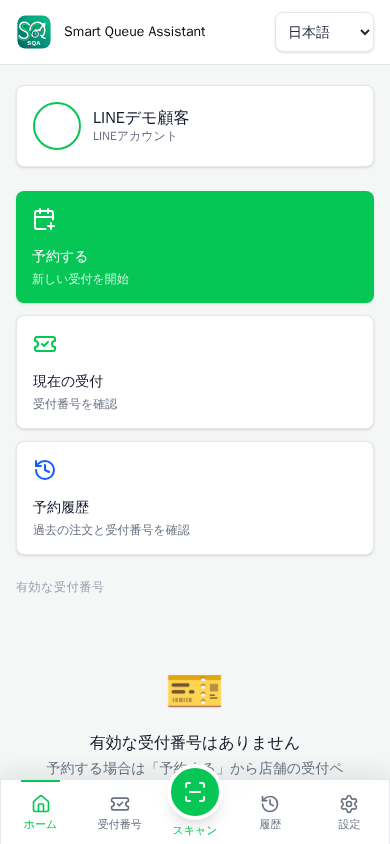
LIFFによりアプリ切替なしで操作でき、LINE Loginにより離脱率を激減させます。
Messaging APIによる通知機能が、「いつ呼ばれるか分からない」ストレスを根本から解決します。
スタッフ専用の一元化ワークスペース
現場の混乱を防ぎ、円滑な接客をサポートするワン画面運用
- リアルタイムで更新される本日の Active Ticket 一覧画面
- 直感的なステータス遷移: Waiting ➔ Called ➔ Serving ➔ Served
- 例外処理への迅速な対応: 不在保留（Defer）、キャンセル、No-show
- 現場での残金会計処理および領収書（Receipt）の即時印刷発行
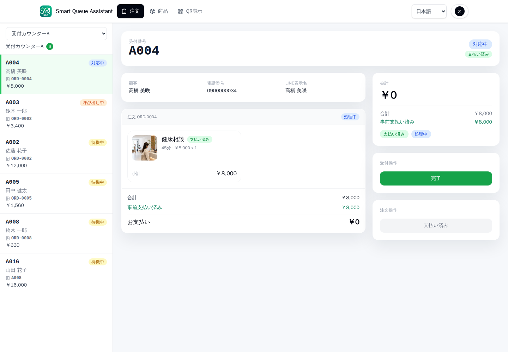
「呼出 ➔ 対応開始 ➔ 対応完了」の基本フローに加え、不在・保留の繰り越し処理、現地での残金会計、領収書発行まで一画面で完結します。
MVPによる実現可能性の実証と次のステップ
本番商用環境を見据えた確実なプロダクト進化
✅ 実装済み機能 (MVP)
- 一気通貫コアフロー完了
- マルチロール対応Dashboard
- LINE LIFF 予約 & チケット
- スタッフ受付画面 & 領収書
- 日・ベト・英 3言語対応
🚀 今後の拡張計画
- 本番決済ゲートウェイ統合
- Google Routes / 位置情報連携
- 実機LINE環境での受入検証
- 本番環境セキュリティ強化
- 本番監視・バックアップ体制
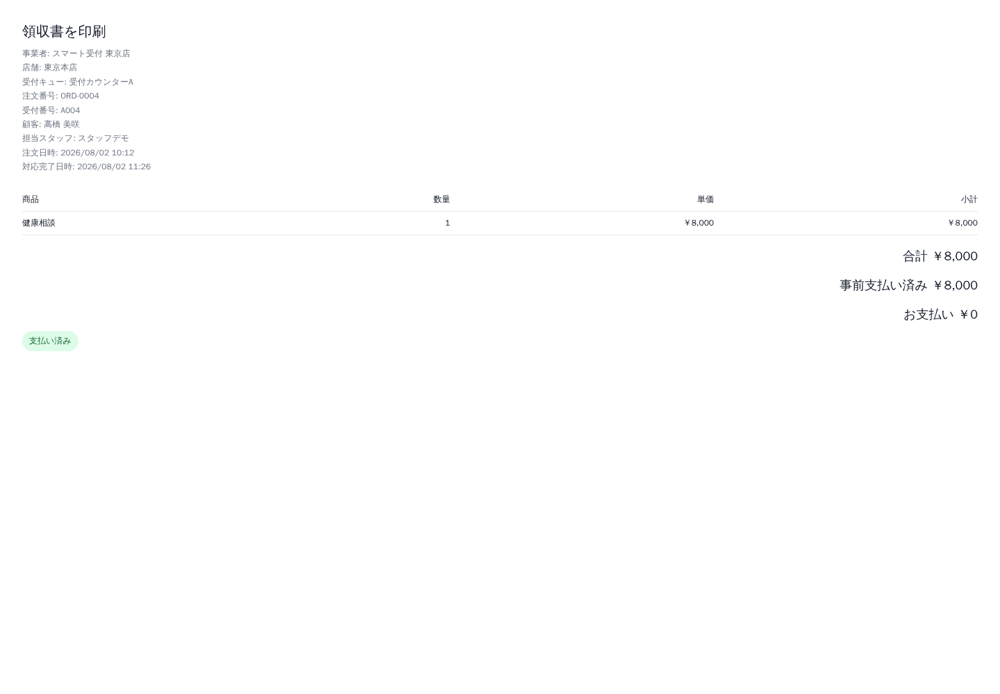
法人登録から顧客のLINE予約、スタッフの現場対応までのコアフローが完成しており、今後は本番決済システムや位置情報APIの統合、本番監視体制の構築を進めてまいります。
メッセージ: 「並んで待つ必要はありません — 自分の順番がわかるだけで十分です。」